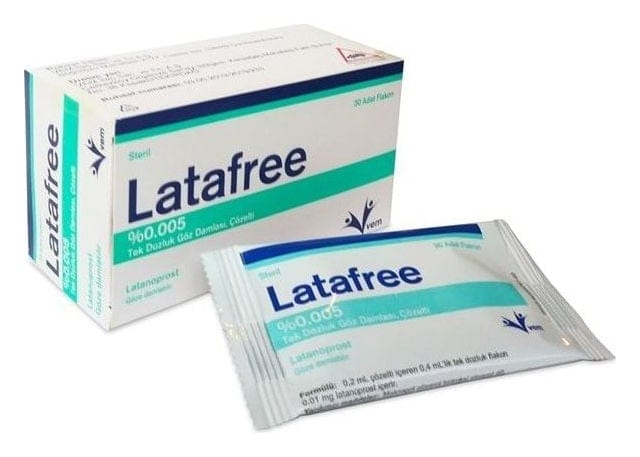

Latafree %0.005 Tek Dozluk Göz Damlası, Çözelti, 30 Adet

Ne için kullanılır
KT · Bölüm 1LATAFREE, 0,2 mL’si 0,01 mg latanoprost içeren tek dozluk göz damlasıdır. 0,2 mL çözelti içeren 0,4 mL’lik tek dozluk flakonlarda kullanıma sunulmaktadır. Her kutu 30 adet flakon içermektedir. LATAFREE, prostaglandinler analoğu adı verilen gruba dahil bir ilaçtır. Bu ilaçlar, gözün içindeki akışkan sıvının kan akımına doğru olan doğal dışa akımını artırır.
LATAFREE, glokomun bir çeşidi olan açık açılı glokomun ve gözdeki yüksek tansiyonun (oküler hipertansiyon) yetişkinlerdeki tedavisi için kullanılır. Bu koşullar, gözünüzün içindeki basıncın artmasından dolayı görme yeteneğinizi etkiler. LATAFREE, tüm yaş grubundaki çocuklarda ve bebeklerde artmış göz içi basıncı ve glokom tedavisinde kullanılır.